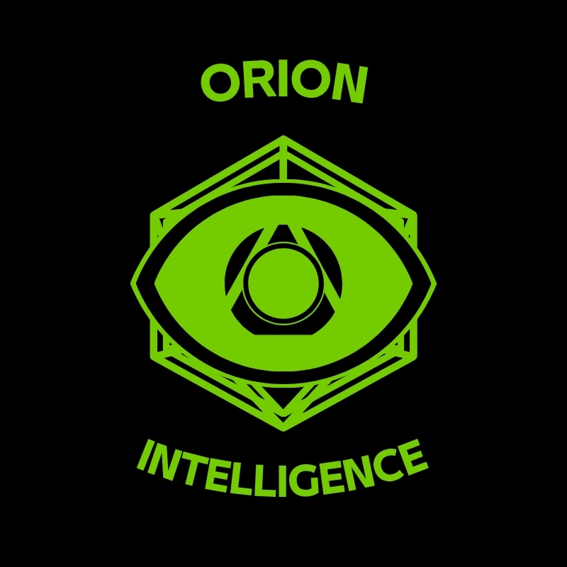

Division 06
Strategic Intelligence & Global Threat Analysis
About the Division
The Orion Intelligence Cell is Kairon's strategic intelligence and global threat monitoring division — operating continuously to provide clients and field divisions with an accurate, current picture of the threat environment worldwide. Where the Cipher Division pursues specific adversaries, Orion watches the horizon.
Founded in 2017 to address the growing complexity of the global threat landscape, Orion analyses open-source intelligence, signals data, human intelligence networks, and geopolitical developments to produce strategic assessments that inform every Kairon engagement — before the first operative is deployed.
Orion's output is consumed by all Kairon divisions, by senior leadership in daily briefings, and by clients requiring an independent strategic intelligence capability on a retainer basis.

Orion Intelligence Cell — Division 06Mission
Orion's mission is persistent vigilance. The division operates on the principle that intelligence superiority — knowing more, faster, and more accurately than the adversary — is the decisive advantage in any security environment.
Capabilities
Production of long-range strategic intelligence assessments on geopolitical developments, emerging threat actors, and macro-level security trends affecting Kairon's clients and operational regions.
24/7 monitoring of open-source intelligence streams, signals data feeds, and human intelligence networks across all of Kairon's operational regions and client sectors.
Structured analytical assessments of specific threat actors, threat collectives, and emerging risk vectors, produced to a consistent intelligence standard for client and internal consumption.
Systematic identification of pre-crisis indicators and threat escalation signals, providing clients with maximum lead time to adjust security postures before incidents materialise.
Regular structured intelligence briefings for retained clients, including country risk assessments, sector-specific threat profiles, and executive-level situation reports.
Comprehensive threat environment assessments produced ahead of all Kairon operational deployments, ensuring field teams operate with full situational awareness from day one.
Methodology
Continuous collection from open-source, signals, human, and technical intelligence sources across all monitored regions and sectors. Orion maintains dedicated collection desks for each major strategic region.
Raw intelligence is processed against existing threat profiles, historical patterns, and current operational context. AI-assisted correlation tools accelerate pattern recognition across large data sets.
Finished intelligence products are produced to defined formats for different audiences: strategic summaries for C-suite clients, tactical assessments for field commanders, and analytical reports for security directors.
All intelligence products are distributed through Kairon's secure client portal and encrypted communication channels, with access controlled to cleared recipients only.
Engage Orion
Orion Intelligence Cell is available to Kairon clients on a retained basis, providing continuous strategic intelligence support as a standalone service or integrated with physical and cyber security engagements.